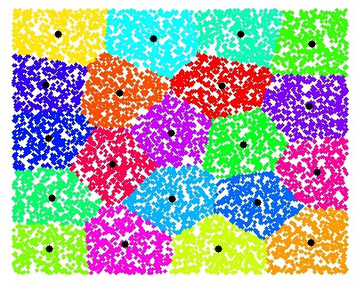

Ivy Nguyen
About Me
Portfolio
Resume
Contact
Hi! I'm Ivy Nguyen.
Data Scientist - Chemist
Without DATA you're just another person with an opinion. (W. Edwards Deming)
Featured Work

The combination of k-means clustering model and time-series algorithm in forecasting sales for new stores.
Investigate all factors that potentially correlate the financial contributions to the 2016 presidential campaign within the Washington state.
Build a “person of interest” (POI) identifier using DecisionTreeClassifier algorithm from scikit-learn with the optimized parameters.